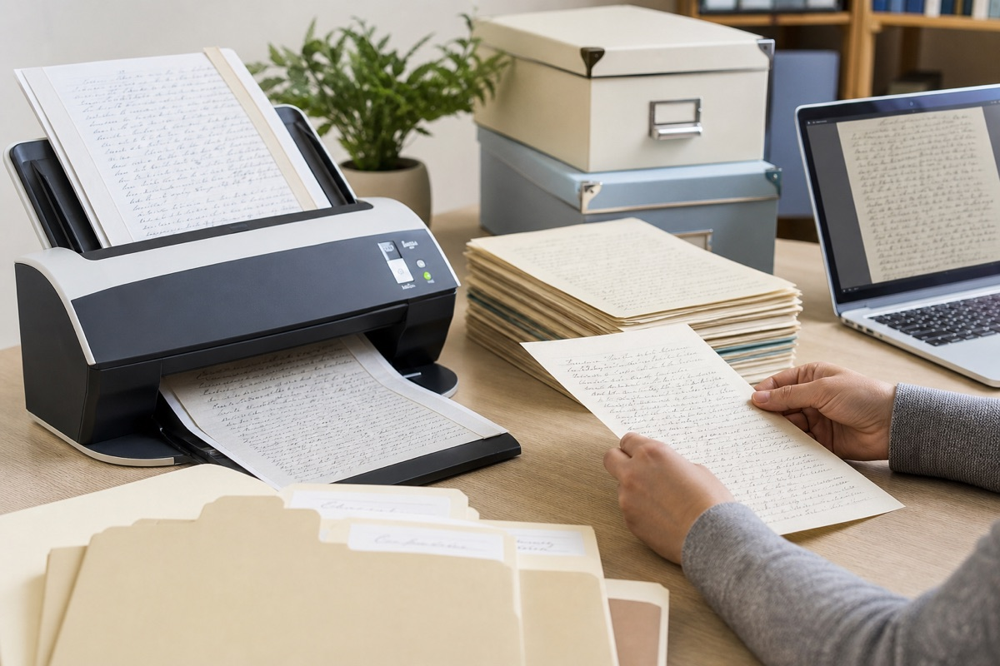

手写文件数字化资料栏目调整说明
手写文件数字化栏目已重新整理。原来分散在多篇文章里的扫描、命名和备份内容，现在按照“准备原件—生成图片—建立目录—保存备份”的顺序排列。

调整前后有什么区别
这次不是简单增加几篇文章，而是把数字化资料按实际处理顺序重新排列。
- 调整前：扫描、格式和备份文章彼此分散；调整后：从准备原件开始逐步进入对应说明。
- 调整前：PDF与单页图片容易混在一起；调整后：明确原图、浏览版和合并文件的用途。
- 调整前：读者需要反复寻找相关内容；调整后：文章底部可以继续进入下一步操作。
这次调整了哪些内容
栏目增加了手机拍摄、扫描分辨率、文件格式和目录命名四组入口。读者可以先判断自己使用手机还是扫描仪，再进入对应的操作说明。
原图与浏览文件明确分开
原始照片和扫描图用于保留细节，裁切或压缩后的文件用于日常浏览。新版说明强调两个目录分开保存，避免用处理后的图片覆盖原文件。
多页文件增加目录示例
连续文件建议按页码编号，并制作包含名称、日期、页数和备注的清单。合并PDF用于阅读，单页原图继续保留，二者使用一致页码。
后续会怎样补充
栏目将根据常见材料问题补充示例，例如页面裁边、浅色笔画丢失和补充文件覆盖旧版本。已经发布的文章会保留原地址。
常见问题
原来的文章还能打开吗？
可以，原有链接保持不变，只调整栏目组织和相互推荐关系。
是否必须使用扫描仪？
不必。少量文件可以用手机拍摄，重点是保持页面完整、光线均匀并保存原图。